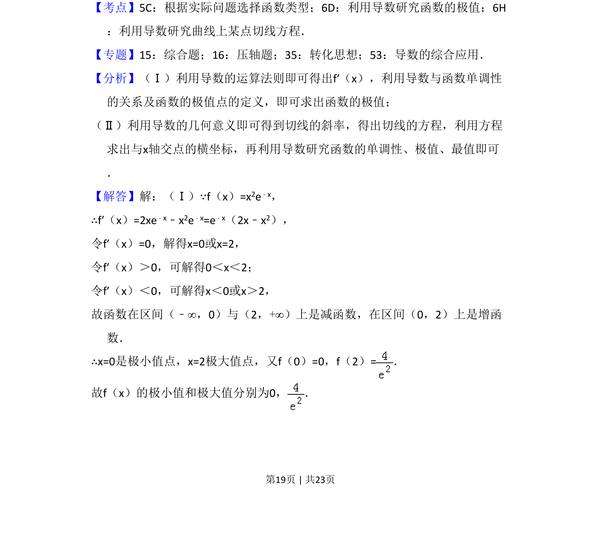
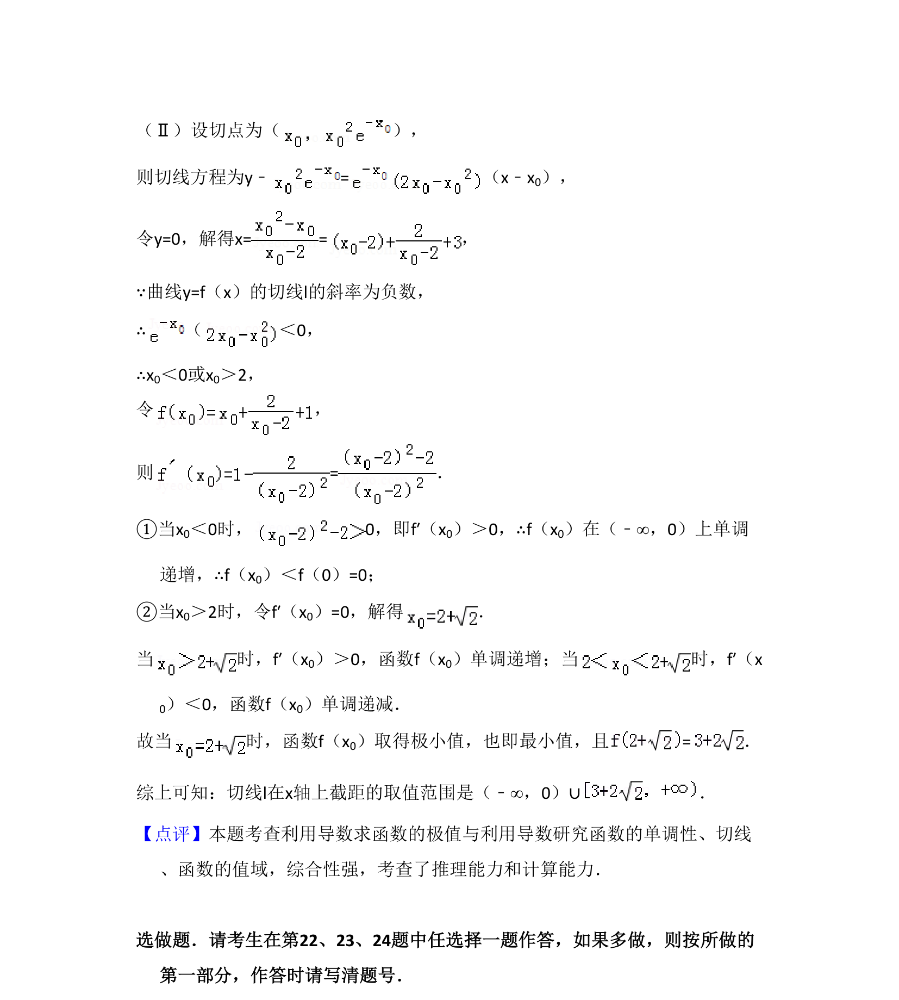

考点：利用导数研究函数的极值 利用导数研究曲线上某点切线方程 函数最值
利用导数求函数的极值，并分析切线斜率与截距的取值范围。


📄 原 PDF 第 19 页：
素材/真题/吉林/2008-2024·（吉林）数学高考真题/2013年高考数学试卷（文）（新课标Ⅱ）（解析卷）.pdf
21．（12分）已知函数f（x）=x2e﹣x （Ⅰ）求f（x）的极小值和极大值； （Ⅱ）当曲线y=f（x）的切线l的斜率为负数时，求l在x轴上截距的取值范围．
【考点】5C：根据实际问题选择函数类型；6D：利用导数研究函数的极值；6H ：利用导数研究曲线上某点切线方程．菁优网版权所有 【专题】15：综合题；16：压轴题；35：转化思想；53：导数的综合应用． 【分析】（Ⅰ）利用导数的运算法则即可得出f′（x），利用导数与函数单调性 的关系及函数的极值点的定义，即可求出函数的极值； （Ⅱ）利用导数的几何意义即可得到切线的斜率，得出切线的方程，利用方程 求出与x轴交点的横坐标，再利用导数研究函数的单调性、极值、最值即可 ． 【解答】解：（Ⅰ）∵f（x）=x2e﹣x， ∴f′（x）=2xe﹣x﹣x2e﹣x=e﹣x（2x﹣x2）， 令f′（x）=0，解得x=0或x=2， 令f′（x）＞0，可解得0＜x＜2； 令f′（x）＜0，可解得x＜0或x＞2， 故函数在区间（﹣∞，0）与（2，+∞）上是减函数，在区间（0，2）上是增函 数． ∴x=0是极小值点，x=2极大值点，又f（0）=0，f（2）=． 故f（x）的极小值和极大值分别为0， ．